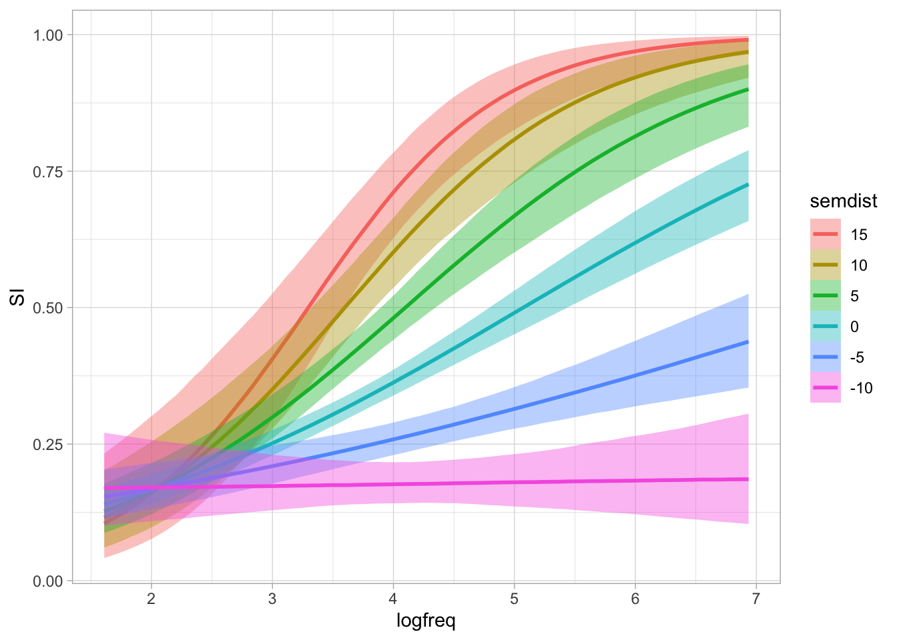

si <- read_csv("data/pankratz2021/si.csv")37 Interactions in regression: two numeric predictors


Chapter 34 and Chapter 36 introduced interactions between two categorical predictors and between a categorical and a numeric predictor respectively. In this chapter, we will learn about the last type of so-called two-way interactions (i.e. interactions with two predictors): an interaction between two numeric predictors. Relative to the other combination of predictor types, numeric-numeric interactions are a bit more difficult to interpret: this is because numeric predictors can take on many numeric values, and the number of combinations of values from two numeric predictors is even larger.
37.1 The data
We will use the data from Pankratz and Van Tiel (2021) on scalar diversity. Scalar inferences arise when a speaker chooses a weaker expression, such as It’s warm, despite the availability of a stronger alternative, such as It’s hot. This choice often leads listeners to infer that the speaker believes the stronger statement is false. The likelihood of deriving this inference differs across scalar expressions, a phenomenon known as scalar diversity. The original study investigated the effect of several variables on whether participants presented with utterances made a scalar inference or not, but in this chapter we will focus on two: (1) relevance of the scalar inference operationalised as the frequency of co-occurrence of the weak and strong adjectives, and (2) semantic distance between the weak and strong adjectives in the scale. Let’s attach the packages and read the data.
library(tidyverse)
theme_set(theme_light())
library(brms)
library(posterior)
library(tidybayes)
library(ggdist)The variables in this data frame that we’ll refer to in this tutorial are:
weak_adj: The weaker adjective on the tested scale (paired with the stronger adjective instrong_adj).strong_adj: The stronger adjective on the tested scale.SI: Whether or not a participant made a scalar inference for the pair of adjectives inweak_adjandstrong_adj(no_scalarif no,scalarif yes).freq: How frequently theweak_adjco-occurred with a stronger adjective on the same scale in a large corpus.semdist: A measure of the semantic distance betweenweak_adjandstrong_adj. A negative score indicates that the words are semantically closer; a positive score indicates that the words are semantically more distant (the units are arbitrary).
We will fit a regression model to test the following hypotheses (from Pankratz and Van Tiel (2021)):
H1: Higher co-occurrence frequency increases the probability of a scalar inference.
H2: Greater semantic distance increases the probability of a scalar inference.
Since this chapter is about interactions, we will also assess the following research question (the original study did not include specific hypotheses regarding interactions):
RQ: How does the effect of frequency vary depending on semantic distance and vice versa?
Before we leap into modelling, though, let’s look in more detail at the variables needed for the regression model, SI, freq and semdist. A little bit of pre-processing is needed here, and the next sections will walk you through it.
37.2 Data transformation
Now SI is coded with no_scalar for “participant did not make a scalar inference” and scalar for “participant made a scalar inference”. Let’s convert SI into a factor with levels in the order c("no_scalar", "scalar") (note that this is the same order as the default alphabetical order, but it does not hurt to specify it ourselves). This is needed to use SI as outcome in a Bernoulli model, as we have done with number of predicates in Chapter 30.
si <- si |>
mutate(
SI = factor(SI, levels = c("no_scalar", "scalar"))
)Since SI is now a factor with scalar as the second level, a Bernoulli model of this variable would estimate the probability of getting a scalar response. In other words, the model will estimate the probability of a scalar inference.
Frequencies notoriously yield an extremely skewed distribution, so it’s common practice in linguistics to log-transform them before including them in an analysis. We have encountered another type of frequency, lexical frequency in Chapter 31. In that chapter, we did not log-transform lexical frequency to keep things simple, but we will log co-occurrence frequency in this chapter. Here’s how the frequencies look right out of the box:
Code
si |>
ggplot(aes(x = freq)) +
geom_density(fill = 'grey', alpha = 0.5) +
geom_rug() +
labs(x = "Frequency of co-occurrence")
Log-transforming the frequencies helps to reduce the skewness. Use mutate() to take the log of freq and store the result in a new column called logfreq.
si <- si |>
mutate(
logfreq = log(freq)
)This is how the distribution of logged frequency looks like:
Code
si |>
ggplot(aes(x = logfreq)) +
geom_density(fill = 'grey', alpha = 0.5) +
geom_rug() +
labs(x = "Frequency of co-occurrence (logged)")
When we’re interpreting the model estimates below, we’ll be talking about the effect on scalar inference of one unit increase on the log frequency scale. When working with logged-transformed variables, you should keep in mind that a unit increase on the logged scale does not corresponds to a unit increase on the original scale. Because the log transformation is non-linear, a unit increase on the log frequency scale (e.g., going from 0 to 1, or going from 2 to 3) corresponds to different magnitudes of increase on the frequency scale depending on which unit increase we evaluate on the log scale. This is the same principle that applies to log estimates in log-normal models: while the difference on the log scale stays the same along all values of a numeric predictor, the difference on the original (un-logged scale) varies depending on the baseline value. Figure 37.3 illustrates the correspondence between changes in the original frequency scale (x-axis) vs changes on the log-frequency scale (y-axis).
Code
ggplot() +
geom_function(fun = log, colour = '#8856a7', linewidth=1) +
scale_x_continuous(limits = c(0, 25), expand = expansion(mult = c(0, 0.01))) +
scale_y_continuous(limits = c(0, 4), expand = expansion(mult = c(0, 0))) +
geom_text(aes(x = 22.5, y = 3.3), label = "y = log(x)", size = 5, colour = '#8856a7') +
labs(y = 'The logarithmic scale',
x = 'The original scale (e.g., frequency)') +
# Horizontal line segments at log = 1, 2, 3
geom_segment(aes(x = 0, xend = exp(1), y = 1, yend = 1), linetype = 'dotted') +
geom_segment(aes(x = 0, xend = exp(2), y = 2, yend = 2), linetype = 'dotted') +
geom_segment(aes(x = 0, xend = exp(3), y = 3, yend = 3), linetype = 'dotted') +
# Vertical line segments descending from exp(1), exp(2), exp(3)
geom_segment(aes(x = exp(1), xend = exp(1), y = 1, yend = 0), linetype = 'dotted') +
geom_segment(aes(x = exp(2), xend = exp(2), y = 2, yend = 0), linetype = 'dotted') +
geom_segment(aes(x = exp(3), xend = exp(3), y = 3, yend = 0), linetype = 'dotted') +
# Vertical line segments illustrating unit increases on log scale
geom_segment(aes(x = 0.1, xend = 0.1, y = 1, yend = 2), linewidth = 2, colour = 'orange') +
geom_text(aes(x = 0.5, y = 1.5), label = paste('2 – 1 = 1'), colour = 'orange', hjust = 0) +
geom_segment(aes(x = 0.1, xend = 0.1, y = 2, yend = 3), linewidth = 2, colour = '#404040') +
geom_text(aes(x = 0.5, y = 2.5), label = paste('3 – 2 = 1'), colour = '#404040', hjust = 0) +
# Horizontal line segments illustrating diff diffs on freq scale
geom_segment(aes(x = exp(1), xend = exp(2), y = 0.1, yend = 0.1), linewidth = 2, colour = 'orange') +
geom_text(aes(x = 5, y = 0.4), label = paste('exp(2) –\n exp(1) = 4.7'), colour = 'orange') +
geom_segment(aes(x = exp(2), xend = exp(3), y = 0.1, yend = 0.1), linewidth = 2, colour = '#404040') +
geom_text(aes(x = 13.5, y = 0.3), label = paste('exp(3) – exp(2) = 12.7'), colour = '#404040') +
theme_light()
The orange bars show that a unit increase between 1 and 2 on the log scale corresponds to a change of 4.7 on the frequency scale, while the grey bars show that a unit increase between 2 and 3 on the log scale corresponds to a change of 12.7 on the frequency scale.
37.3 Data visualisation
In Chapter 30, we plotted the proportion of single and multiple predicates in the three signing groups in Figure 30.3. The signing group variable in that figure is categorical and we just needed to use geom_bar() with position = "fill" to plot the proportion of single and multiple predicates, rather than just the counts. With the scalar inference data, we have two numeric predictors and geom_bar() would not do what you want. Instead, we need a different approach, using geom_smooth().
The variable SI is binary: no_scalar if a scalar inference was not made, scalar if it was. Let’s start with a plot to visualise this binary outcome as a proportion of scalar inference being present on the y-axis and log frequency on the x-axis. SI is categorical, but we want to show the proportion of scalar vs no_scalar across values of log frequency. We can achieve this by temporarily converting SI to a numeric variable and subtract 1, and then using geom_smooth() with a binomial family (which will indicate the proportion of scalar responses), like so:
si |>
mutate(SI = as.numeric(SI) - 1) |>
ggplot(aes(logfreq, SI)) +
geom_point() +
geom_smooth(method = "glm", method.args = list(family = "binomial")) +
labs(x = "Frequency of co-occurrence (logged)", y = "Proportion of scalar inference")
The function as.numeric() works with factors by converting each level into a number: try as.numeric(si$SI) to see what it does. Then, we subtract 1 so that 1 becomes 0 and 2 becomes 1. The binomial family in geom_smooth() adds a regression line which represents the effect of logged frequency on the proportion of scalar inference (on the y-axis, where 0 means no scalar inference and 1 means the participant did a scalar inference). We have also included points corresponding to the actual observed SI: of course, these can only be 0 or 1. Figure 37.4 suggests that there is a somewhat positive relationship between log-frequency and probability of the participant making a scalar implication. In other words, the higher the log frequency, the higher the probability of a scalar inference.
Figure 37.5 shows the relationship between log-frequency and proportion of scalar inference for each individual adjective. To achieve this, it is necessary to first calculate ourselves the proportion of scalar inference for each adjective separately Then we can use geom_text() to add the corresponding weak_adj on the plot. The following code performs the first step: we can obtain the mean proportion for each adjective by grouping the data by weak_adj and by taking the mean of SI recoded as 0/1 as above. Since we need logfreq for plotting, we need to also group by this variable.
si_summary <- si |>
group_by(weak_adj, logfreq) |>
summarise(
prop_si = mean(as.numeric(SI) - 1),
# logfreq = mean(logfreq)
)`summarise()` has regrouped the output.
ℹ Summaries were computed grouped by weak_adj and logfreq.
ℹ Output is grouped by weak_adj.
ℹ Use `summarise(.groups = "drop_last")` to silence this message.
ℹ Use `summarise(.by = c(weak_adj, logfreq))` for per-operation grouping
(`?dplyr::dplyr_by`) instead.si_summaryWe can now plot si_summary. To include the adjective in the plot, we need to specify the label aesthetic in geom_text(). Note that the main x and y aesthetics must be logfreq and prop_si. We also set the y-axis range to be between 0 and 1 for clarity.
si_summary |>
ggplot(aes(x = logfreq, y = prop_si)) +
geom_text(aes(label = weak_adj)) +
labs(
x = "Frequency of co-occurrence (logged)",
y = "proportion of scalar inference"
) +
ylim(0, 1)
Figure 37.5 shows logged frequency of co-occurrence on the x-axis and proportion of scalar inference on the y-axis. Each word is plotted on the graph based on their frequency and the mean proportion of scalar inference. In line with Figure 37.4, adjectives with higher frequency elicit higher proportions of scalar inferences.
WarningExercise 1
Write the code for the following plot.

Since our research question is about the interaction between frequency and semantic distance, it is a good idea to plot these together with proportion of scalar inference in a single plot. We need to calculate the mean proportion of scalar inference for each adjective as we have done for Figure 37.5. We will do this in a pipe chain in the figure code below rather than in separate steps, just for illustration purposes. The pch argument selects the point symbol (or character) by its number (you can search for the list of available symbols online). scale_fill_distiller() allows us to select a palette for filling the points with colour depending on the value of prop_si. The distiller palettes are continuous versions of the colorBrewer palettes (see the colorBrewer website). We select the red-purple palette (palette = "RdPu") and we set the direction to 1 so that darker colours correspond to higher values.
si |>
group_by(weak_adj, logfreq, semdist) |>
summarise(
prop_si = mean(as.numeric(SI) - 1)
) |>
ggplot(aes(logfreq, semdist, fill = prop_si)) +
geom_point(size = 3, pch = 21) +
scale_fill_distiller(palette = "RdPu", direction = 1) +
labs(
x = "Frequency of co-occurrence (logged)",
y = "Semantid distance",
fill = "Proportion of\nscalar inference"
)
Figure 37.6 suggests that higher frequency and higher semantic distance correspond to a higher proportion of scalar inference: the dots in top right corner are darker that the dots in the bottom left corner.
37.4 Modelling the data
We can now model the data to assess the hypotheses and question. We want to model the probabiilty of scalar inference as a function of logged frequency (\(f\)) and semantic distance (\(sd\)). Here’s the mathematical specification of the model we’ll fit:
\[\begin{aligned} \text{SI} & \sim Bernoulli(p) \\ logit(p) & = \beta_0 \\ & + \beta_1 \cdot f \\ & + \beta_2 \cdot sd \\ & + \beta_3 \cdot f \cdot sd\\ \end{aligned}\]
Your model summary should look similar to this one (small deviations are normal).
summary(si_bm) Family: bernoulli
Links: mu = logit
Formula: SI ~ logfreq + semdist + logfreq:semdist
Data: si (Number of observations: 2006)
Draws: 4 chains, each with iter = 2000; warmup = 1000; thin = 1;
total post-warmup draws = 4000
Regression Coefficients:
Estimate Est.Error l-95% CI u-95% CI Rhat Bulk_ESS Tail_ESS
Intercept -2.66 0.19 -3.05 -2.29 1.00 2235 2204
logfreq 0.53 0.05 0.43 0.62 1.00 2141 1976
semdist -0.10 0.05 -0.20 -0.01 1.00 1609 1894
logfreq:semdist 0.05 0.01 0.03 0.08 1.00 1587 1974
Draws were sampled using sampling(NUTS). For each parameter, Bulk_ESS
and Tail_ESS are effective sample size measures, and Rhat is the potential
scale reduction factor on split chains (at convergence, Rhat = 1).Now, let’s interpret the model estimates.
Intercept, \(\beta_0\): When log frequency and semantic distance are 0, there is a 95% probability that the log-odds of a scalar inference being made lie between -3.06 and -2.24.logfreq, \(\beta_1\): When semantic distance is 0, each unit increase in log frequency, corresponds to an increase in log-odds (of making a scalar inference) of 0.42 and 0.63 at 95% probability.semdist, \(\beta_2\): When log frequency is 0, each unit increase in semantic distance, corresponds to a decrease in log-odds of 0 to 0.21, at 95% confidence.
You might be inclined to believe that semantic distance has a negative effect on probability of semantic inference, which is at odds with the plot above that showed a positive effect of semantic distance. However, the estimate in the model is giving us the effect of semantic distance when logged frequency is 0. Crucially, the interaction coefficient is positive.
logfreq:semdist, \(\beta3\): a unit increase in log frequency is associated with a positive adjustment to the effect of (centred) semantic distance between 0.03 and 0.08 log-odds, at 95% probability.
In other words, as centred log frequency increases, the effect of semantic distance on the probability of a scalar inference being made increases as well (and conversely, as semantic distance increases, the effect of log frequency on the probability of a scalar inference being made increases, given the fact that interactions are symmetric). What this means is that at a certain value of logged frequency, the negative effect of semantic distance becomes positive. We can find the value of logged frequency at which the effect of semantic distance goes to 0 (meaning no effect): above that value of logged frequency, the effect of semantic distance will be positive.
To find the logged frequency value at which the effect of semantic distance is 0, we need the formula of the conditional effect of semantic distance. Why is it conditional? Because it is conditional of the value of logged frequency, given we have included an interaction in the model. The conditional formula is the following:
\[\beta_2 + \beta_3 \cdot f\]
When \(f = 0\), the effect is \(\beta_2\): that is why we say above that semdist is the effect of semantic distance when logged frequency is 0. To find the value of logged frequency where the effect of semantic distance is zero we just set the conditional effect to 0 and solve it for \(f\).
\[\begin{aligned} \beta_2 + \beta_3 \cdot f & = 0\\ f & = -\frac{\beta_2}{\beta_3} \end{aligned}\]
Let’s take the means of the posterior distributions of \(\beta_2\) and \(\beta_3\) (the Estimate column in the model summary) for simplicity, although we could do it with the entire posterior draws (and we would obtain posterior draws of \(f\) rather than a single value).
\[\begin{aligned} f & = -\frac{\beta_2}{\beta_3} = \frac{-0.1}{0.05} = 2 \end{aligned}\]
So when logged frequency is 2, the mean effect of semantic distance is 0. For values of logged frequency below 2, the mean effect of semantic distance is negative; for values of logged frequency above 2, the mean effect of semantic distance is positive. In the data, the range of logged frequency is between 1.6 and 6.9, so most of the data has logged frequency 2. Thus, for most of the data the effect of semantic distance will be positive. We can plot the expected values with conditional_effects() to verify this.
By default, conditional_effects() plots the effect of the specified predictor when the other numeric predictors are at their mean (in our data, the mean is 3.7), not at 0. Figure 37.7 shows the resulting plot. In this figure, the effect of semantic distance is clearly positive: the greater the semantic distance the higher the probability of scalar inference.
conditional_effects(si_bm, "semdist")Ignoring unknown labels:
• fill : "NA"
• colour : "NA"
Ignoring unknown labels:
• fill : "NA"
• colour : "NA"
We can tell conditional_effects() to show the effect conditional on logged frequency being 2, rather than its mean. We can achieve this by specifying the conditions argument using a list, like in the following code.
conditional_effects(si_bm, "semdist", conditions = list(logfreq = 2))Ignoring unknown labels:
• fill : "NA"
• colour : "NA"
Ignoring unknown labels:
• fill : "NA"
• colour : "NA"
At logged frequency 2, there is no clear effect of semantic distance. Let’s try now with logged frequency 0. Here, the effect of semantic distance should be negative, because that is what the coefficient tells us. This is indeed what we see in Figure 37.9.
conditional_effects(si_bm, "semdist", conditions = list(logfreq = 0))Ignoring unknown labels:
• fill : "NA"
• colour : "NA"
Ignoring unknown labels:
• fill : "NA"
• colour : "NA"
The interaction term in the model is allowing the effect of semantic distance to vary depending on the value of frequency (and vice versa). We can thus use conditional_effects() to plot the interaction. With two numeric predictors, the function picks three value of the other predictor for plotting: the mean and ±1 SD from the mean.
conditional_effects(si_bm, "semdist:logfreq")
conditional_effects(si_bm, "semdist:logfreq", int_conditions = list(logfreq = seq(0, 8, by = 2)))
conditional_effects(si_bm, "logfreq:semdist", int_conditions = list(semdist = seq(-10, 15, by = 5)))
37.5 Expected values with numeric/numeric interactions
37.6 Reporting
Now, let’s write a full report of model and results. Fill in the blanks yourself.
We fitted a Bayesian model to scalar inference (absent vs present), using a Bernoulli distribution. We included logged word frequency and semantic distance, and their interaction as predictors. Both predictors were centred.
The model’s results suggest that, when logged frequency and semantic distance are at their mean, the probability of a scalar inference being present is between … and …% (\(\beta\) = …, SD = …). For each unit increase of logged frequency, when semantic distance is at its mean, the probability increases by … to … log-odds (\(\beta\) = …, SD = …). For each unit increase of semantic distance, when logged frequency is at its mean, the probability increases by … to … log-odds (\(\beta\) = …, SD = …). The positive effect of logged word frequency increases with increasing semantic distance, by … to … log-odds (\(\beta\) = …, SD = …).